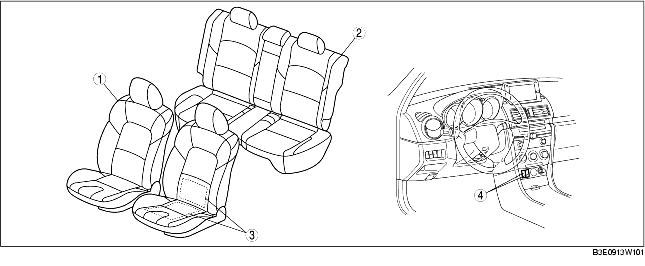

.
|
1
|
Siège avant
(voir la section DEPOSE/REPOSE DE SIEGE AVANT.)
(voir la section DEMONTAGE/REMONTAGE DE SIEGE AVANT.)
|
|
2
|
Siège arrière
(voir la section DÉPOSE/REPOSE DE SIÈGE ARRIÈRE.)
(voir la section DEMONTAGE/REMONTAGE DE SIEGE ARRIERE.)
|
|
3
|
Unité de chauffage de siège
(voir la section INSPECTION D'UNITE DE CHAUFFAGE DE SIEGE.)
|
|
4
|
Contacteur de chauffage de siège
(voir la section DÉPOSE/REPOSE DE CONTACTEUR DE CHAUFFAGE DE SIÈGE.)
(voir la section INSPECTION DE CONTACTEUR DE CHAUFFAGE DE SIÈGE.)
|